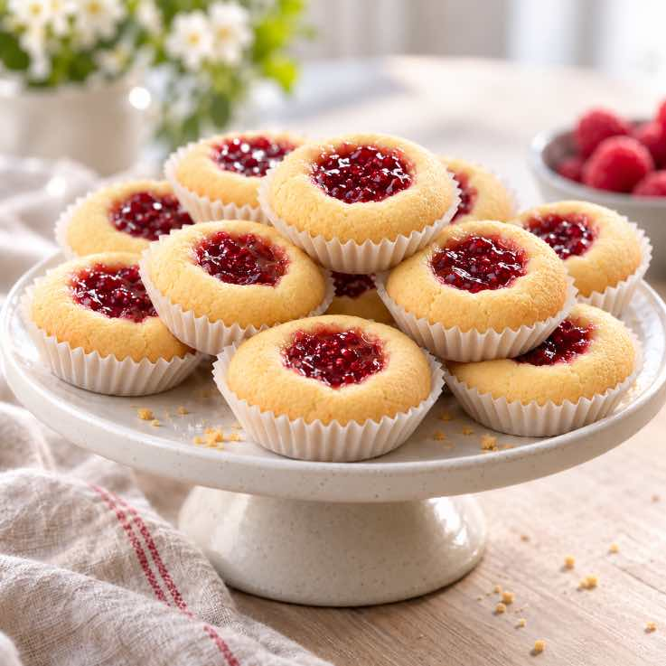
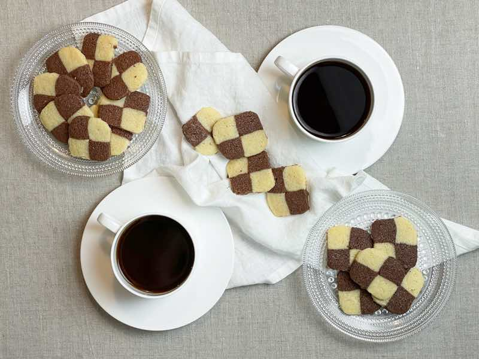
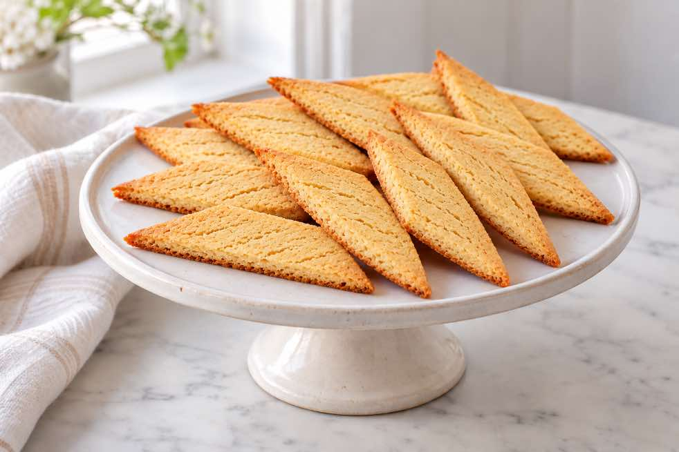
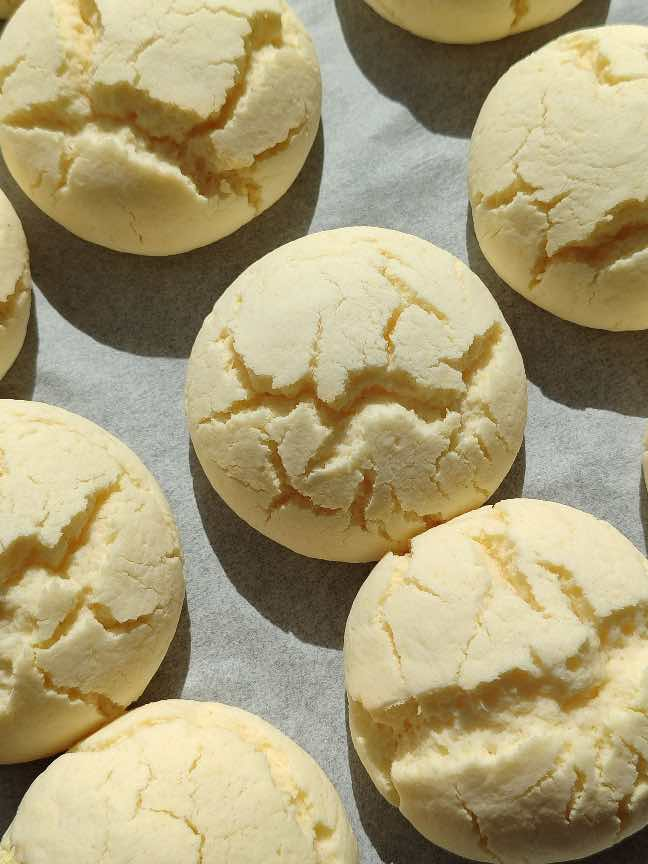
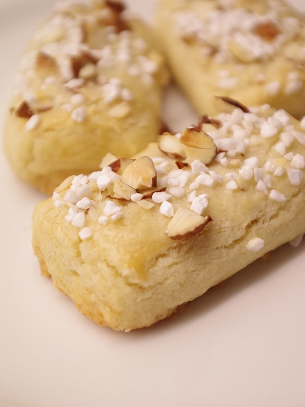
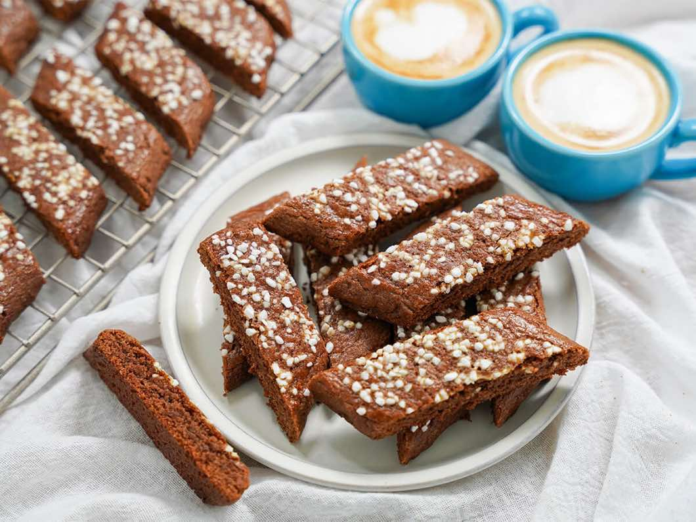
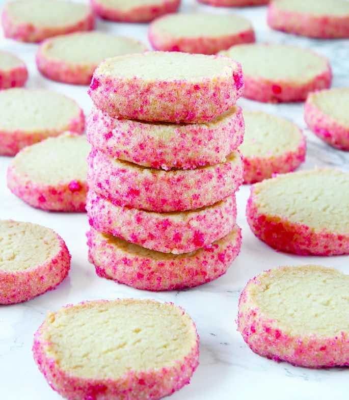
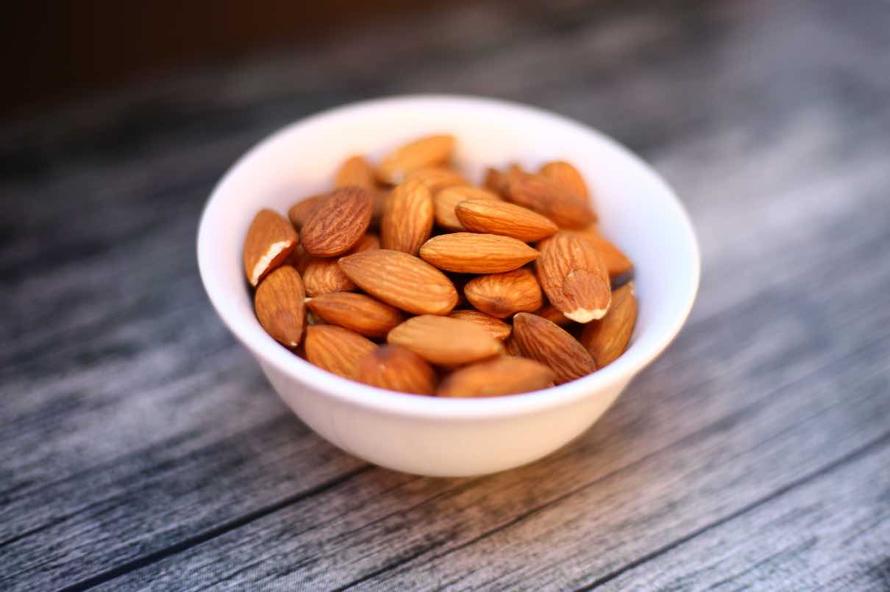
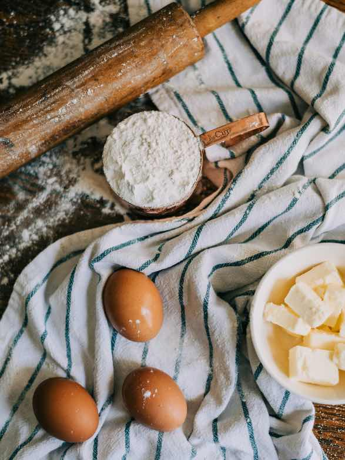

Baklista på sju sorters kakor
HALLONGROTTOR

Hallongrottor är mördegskakor med en liten grop fylld med ljuvlig hallonsylt.
De är både enkla att baka och uppskattade på kakfatet.
20–24 kakor
Ingredienser
- 200 g smör eller margarin
- 1 dl strösocker
- 2 tsk vaniljsocker
- 4,5 dl vetemjöl
- 1 tsk bakpulver
- 1 dl fast hallonsylt
Gör så här
- Sätt ugnen på 200 °C.
- Arbeta snabbt ihop smör, socker, vaniljsocker, vetemjöl och bakpulver till en deg. Gärna i matberedare.
- Rulla degen till små bollar och lägg dem i små kakformar ca 5 cm i diameter.
- Gör en grop i varje kaka med ett finger eller skaftet på en sked.
- Fyll groparna med hallonsylt.
- Grädda i cirka 12 till 15 minuter och låt sedan svalna på galler.
SCHAKRUTOR

Schackrutor är klassiska småkakor med ett dekorativt rutmönster av ljus och chokladsmakande mördeg.
Kakorna blir spröda och ser mycket läckra ut på kakfatet.
De imponerar med sitt utseende men är väldigt enkla att baka.
50 kakor
Ingredienser
- 200 g osaltat smör
- 1 dl strösocker
- 4,5 dl vetemjöl
- Ljus deg: 2 tsk vaniljsocker
- Mörk deg: 2 msk kakao
Gör så här
- Ta fram smöret så att det hinner bli rumsvarmt.
- Vispa ihop smör och socker till en jämn smet.
- Tillsätt vetemjöl, lite i taget, och fortsätt röra tills det blir stora smulor.
- Dela degen i två lika stora delar.
- Arbeta in kakaon i den ena delen och vaniljsocker i den andra så att du får en ljus och en mörk deg.
- Dela degarna i två delar så du får två ljusa och två mörka delar.
- Rulla ut till längder och tryck till dem mot bakbordet så längderna får platta kanter. Lägg dem tätt ihop, med två ovanpå de andra så de bildar ett litet schackmönster.
- Låt vila i kylen 1 till 2 timmar.
- Sätt ugnen på 200 °C.
- Ta fram längden och skär ca 3 till 4 mm tjocka skivor.
- Lägg kakorna på en plåt med bakplåtspapper och grädda mitt i ugnen i ca 8 till 10 minuter.
KOLASNITTAR

Kolasnittar är avlånga lite sega småkakor med smak av sirap och vanilj.
De skärs i sneda bitar direkt när de kommer ut ur ugnen.
20 kakor
Ingredienser
- 100 g smör
- 1 dl strösocker
- 2 msk mörk sirap
- 2,5 dl vetemjöl
- 1 tsk bakpulver
- 1 tsk vaniljsocker
Gör så här
- Sätt ugnen på 175 °C.
- Rör smör, socker och sirap mjukt.
- Blanda vetemjöl, bakpulver och vaniljsocker. Arbeta sedan ihop med smörsmeten till en deg.
- Dela degen i två delar och rulla dem till längder ca 40 cm långa.
- Lägg längderna på en plåt med bakplåtspapper och platta till dem.
- Grädda mitt i ugnen cirka 12 minuter.
- Låt kakorna svalna något och skär längderna i sneda bitar medan de fortfarande är varma.
DRÖMMAR

Drömmar är mycket spröda småkakor med mild vaniljsmak som är lätta att baka.
Hjorthornssalt gör att kakorna får sin karakteristiskt porösa och ljuvligt frasiga konsistens.
40 till 45 kakor
Ingredienser
- 100 g smör
- 3 dl strösocker
- 1 dl rapsolja
- 2 tsk vaniljsocker
- 1 tsk hjorthornssalt
- 4 dl vetemjöl
Gör så här
- Sätt ugnen på 150 °C.
- Rör smör och socker mjukt.
- Tillsätt oljan, lite i taget, under vispning.
- Blanda vaniljsocker och hjorthornssalt med lite av mjölet och rör ned blandningen i smeten. Tillsätt sedan resten av mjölet.
- Rulla små bollar av degen och lägg dem på plåtar med bakplåtspapper.
- Grädda mitt i ugnen i cirka 15–20 minuter och låt kallna på plåten.
FINSKA PINNAR

Finska pinnar är spröda mördegskakor med mandel och pärlsocker på toppen.
Trots namnet är de en välkänd klassiker på svenska kakfat.
Ca 60 kakor
Ingredienser
- 200 g smör
- 1 dl strösocker
- 4,5 dl vetemjöl
- 1 tsk vaniljsocker
- 1 dl mandelmjöl
- 1 äggvita
Garnering
- ca 1 dl hackad sötmandel och 2 msk pärlsocker
Gör så här
- Sätt ugnen på 175 °C.
- Blanda mandel, mjöl och socker och arbeta ihop med tärnat smör till en deg. Låt vila i kylskåp ca 30 minuter.
- Dela degen i 8 delar och rulla varje del till en 30 cm lång längd.
- Lägg längderna på en plåt med bakplåtspapper.
- Vispa upp äggvitan lätt och pensla längderna.
- Strö över hackad mandel och pärlsocker och dela längderna i ca 4 cm långa bitar. Sära bitarna lite så att de inte fastnar i varandra.
- Grädda mitt i ugnen i cirka 10–12 minuter.
CHOKLADSNITTAR

Chokladsnittar är avlånga, spröda och lite sega småkakor med smak av kakao och vanilj.
De skärs i sneda bitar direkt när de kommer ut ur ugnen och toppas ofta med pärlsocker.
70 kakor
Ingredienser
- 200 g smör
- 5 dl vetemjöl
- 1 tsk hjorthornssalt
- 2 msk kakao
- 2 tsk vaniljsocker
- 1,5 dl florsocker, siktat
- 1 msk vatten, kallt
Gör så här
- Värm ugnen till 175 °C. Låt smöret bli mjukt. Blanda de torra ingredienserna i en skål. Arbeta in fettet.
- Tillsätt vatten och arbeta snabbt ihop en deg.
- Rulla ut fingertjocka längder och lägg dem på en plåt med bakplåtspapper.
- Platta till dem lätt och grädda mitt i ugnen ca 10 minuter.
- Skär de varma längderna i sneda bitar.
BRYSSELKEX

Brysselkex är klassiska svenska småkakor med en spröd, smörig konsistens och mild smak av vanilj.
De känns igen på sin rosa sockerkant och passar fint till kaffet.
40 kakor
Ingredienser
- 200 g smör, rumsvarmt
- 1 dl strösocker
- 1 dl potatismjöl
- 1 tsk vaniljsocker
- 4 dl vetemjöl
- 0.5 dl strösocker
- röd hushållsfärg
- pärlsocker
Gör så här
- Ta fram smöret och låt det bli mjukt i rumstemperatur.
- Rör smör, socker och vaniljsocker mjukt.
- Tillsätt vetemjölet och arbeta ihop till en smidig deg.
- Dela degen i två delar och rulla dem till längder ca 4 cm i diameter.
- Blanda sockret till kanten med några droppar röd hushållsfärg. Rulla längderna i det rosa sockret och linda in dem i plastfolie. Låt vila i kylskåpet cirka 30 minuter.
- Sätt ugnen på 175 °C. Skär längderna i skivor, cirka ½ cm tjocka, och lägg dem på en plåt med bakplåtspapper.
- Grädda mitt i ugnen cirka 10 till 12 minuter. Låt kakorna svalna på plåten innan du serverar dem.
Allergier

Allergier är något som alltid måste tas på allvar, eftersom de kan orsaka allvarliga reaktioner och i värsta fall vara livshotande. Därför är det viktigt att vara försiktig när man bakar och följer recepten på den här sidan. Vissa kakor kan innehålla nötter eller mandel, och även ingredienser som choklad, mjöl och strössel kan innehålla spår av nötter. Läs därför alltid innehållsförteckningen på alla produkter innan du börjar baka. Använd rena redskap och undvik korskontaminering mellan ingredienser. Är du osäker på innehållet, servera inte kakan till någon med allergi.Fullständig ingredienslista

Mejeriprodukter och ägg
- Smör
- Margarin – alternativ till smör i hallongrottor
- Äggvita
- Strösocker
- Vaniljsocker
- Pärlsocker
- Hallonsylt
- Mörk sirap
- Ljus sirap
Mjöl och bakningsingredienser
- Vetemjöl
- Mandelmjöl
- Bakpulver
- Hjorthornssalt
- Kakao
Nötter och mandel
- Sötmandel, hackad
Oljor och färgämnen
- Rapsolja
- Röd hushållsfärg